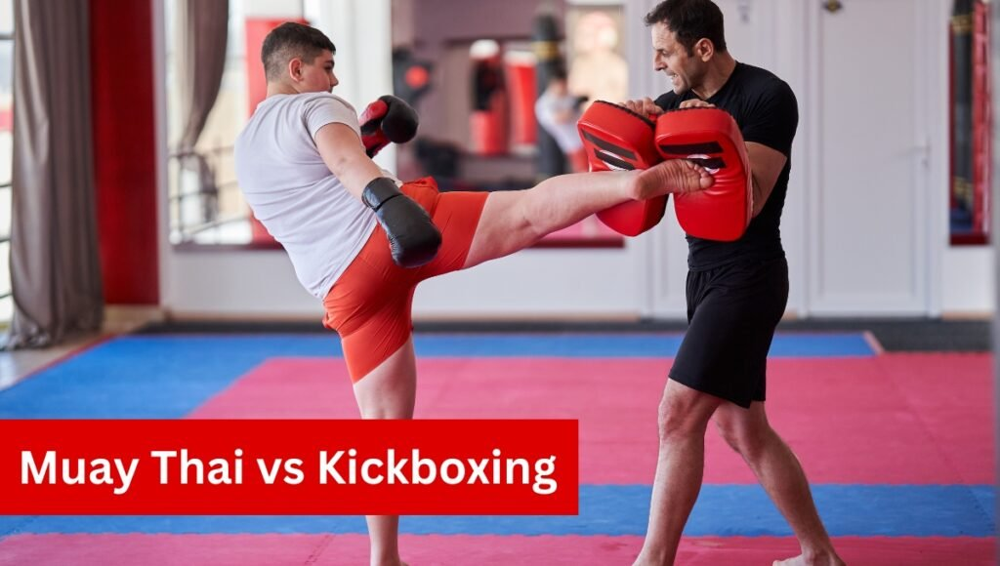
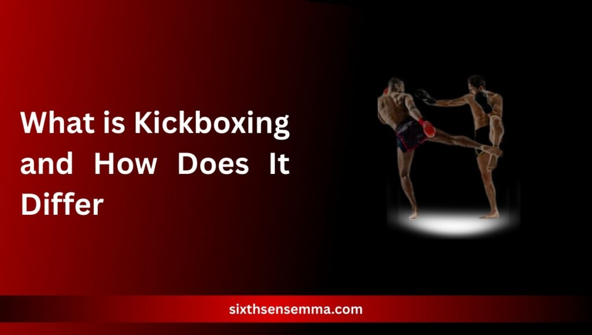

Muay Thai vs Kickboxing for Self-Defense, What Works Better

Muay Thai vs Kickboxing for Self-Defense, it’s a choice that can seem confusing at first glance. Both are powerful striking arts, each with its own strengths, yet their application in real-world self-defense scenarios differs significantly. For those seeking to protect themselves effectively, understanding the core mechanics, mindset, and street-ready capabilities of each discipline is crucial. What may appear similar in a ring can react very differently under pressure when survival not scoring points is the priority.
This guide aims to cut through the surface similarities and help you identify which path aligns better with your self-defense goals. Whether you’re preparing for serious training or simply want to feel safer and more confident in unpredictable situations, knowing the differences between these two martial arts can give you a decisive edge.
Sixth Sense MMA, Real Training in Muay Thai vs Kickboxing
At Sixth Sense MMA, we give you more than just gym workouts. Our training is built around real experience in both Muay Thai and Kickboxing, helping you understand how each one works not just in the ring, but in real life. If you’re trying to figure out which style fits you best, our coaches will guide you step by step, showing the strengths of both and how to use them. Whether you’re just starting out or looking to improve, we create a space where you can train smart, get stronger, and feel ready to handle tough situations. Muay Thai vs Kickboxing isn’t just about learning moves .it’s about knowing what works for you, and we’re here to help you find that out.
Muay Thai Origins EXPOSED: The Warrior Art Unveiled
Muay Thai, known as the Art of Eight Limbs, began in Thailand during the 16th century, originally developed as a form of battlefield warfare. This martial art was initially a survival tool for Thai soldiers, teaching them how to fight using punches, elbows, knees, and kicks making it a full-body striking system. Rooted in Thai military history and rich cultural traditions, it forms a powerful fighting style centered on aggression and close-range combat.
Over time, Muay Thai has evolved, particularly with the formation of various Muay Thai organizations like the Sports Authority of Thailand, which helped standardize its practice and bring it into the modern era. Along with the physical techniques, Muay Thai has a rich cultural component, such as Muay Thai music and the Wai Kru, a pre-fight ritual paying respects to teachers and the sport. The symbolic Muay Thai shorts and the specific rules and scoring systems prioritize ring control, aggressive striking, and the effectiveness of blows, all of which remain a hallmark of the sport today.
What is Kickboxing and How Does It Differ
Kickboxing emerged in the 1970s as a fusion of Western boxing and karate-style kicks, making it a more versatile and hybrid combat sport. Initially popularized in Japan and the U.S., kickboxing tends to focus on faster-paced action, with emphasis on fluid combinations of punches and kicks, along with the ability to move in and out of range quickly. Unlike Muay Thai, kickboxing generally excludes elbow and knee strikes, with less emphasis on the clinch.

Modern kickboxing training is often geared toward fitness and conditioning, making it a popular choice in gyms across the globe. The sport’s rules and scoring emphasize volume and clean strikes, rewarding precision and speed over the raw power seen in Muay Thai. Although both martial arts have a few similarities, their methods of combat and self-defense vary in technique, pace, and overall focus.
Muay Thai vs Kickboxing: Which Is More Practical in a Real Fight
When it comes to real-life encounters, Muay Thai and kickboxing offer different advantages. Muay Thai thrives in close-quarters combat, using powerful elbow and knee strikes that deliver serious damage in confined or tight spaces. The Muay Thai clinch allows fighters to control their opponents and neutralize them in chaotic situations.
On the other hand, kickboxing is often faster-paced, focusing on footwork and range. While it excels at striking from a distance, it lacks the clinch and elbow techniques that make Muay Thai more effective in close-quarters combat.
Muay Thai’s Strengths in Real-Fight Situations
Muay Thai provides an edge in close-range encounters where control and powerful strikes are crucial. The Muay Thai clinch gives fighters the ability to neutralize their opponent by controlling the body, making it easier to land elbows, knees, and punches.
This style trains fighters to maintain balance and calm even in chaotic and high-pressure situations. With Muay Thai sparring and conditioning, fighters develop resilience, enabling them to stay composed and strike effectively in tight spaces.
Kickboxing’s Strengths in Real-Fight Situations
Kickboxing focuses on speed and movement, excelling in longer-range combat. It integrates karate-style kicks with boxing punches, offering quick combinations that allow fighters to maintain a distance from their opponents. Footwork plays a crucial role, allowing fighters to control the pace, maintain distance, and move in and out of range with speed and precision.
However, kickboxing lacks clinching and elbow strikes, which are core strengths in Muay Thai. While it’s effective at maintaining distance, kickboxing may be less suited for close-quarters combat.
Striking Power and Efficiency in Real-World Scenarios
When it comes to striking power, Muay Thai fighters are known for generating immense force by utilizing their hips and full-body momentum. This allows them to deliver strikes that can cause significant damage, especially when executed with precision. The Muay Thai kick often aimed at the legs, midsection, or head utilizes the entire body’s rotation, ensuring the strike is both powerful and difficult to evade. Similarly, a well-timed Muay Thai elbow can disable an attacker instantly, causing cuts or fractures that quickly end the confrontation.
In contrast, kickboxing emphasizes speed and fluidity, with strikes that are quicker and more versatile, enabling the fighter to maintain momentum and adjust to their opponent’s movements. However, while these strikes are effective in a fast-paced environment, they may not always carry the same fight-stopping power that Muay Thai offers. In close-quarter combat, where distance is limited, kickboxing‘s quicker strikes might lack the impact needed to incapacitate an attacker as quickly as a well-placed Muay Thai elbow or kick.
Footwork, Defense, and Movement Comparison
Muay Thai focuses on maintaining a strong, grounded stance, emphasizing defensive techniques like checking kicks and blocking punches. This style of footwork ensures fighters stay balanced and able to absorb or neutralize strikes in close-range combat. Kickboxing, on the other hand, relies on dynamic footwork, with an emphasis on quick side steps, angles, and fluid movement, making it more suited for open-space defense and creating distance.
Muay Thai Footwork and Defense
- Muay Thai footwork is designed for stability and positioning, allowing fighters to absorb incoming strikes without losing control. It supports effective counterattacks in close quarters, where power and balance are key.
- The Muay Thai defense is about maintaining control by using blocking and checking techniques that can disrupt an opponent’s rhythm and neutralize their offensive attempts.
- Unlike kickboxing, the focus on close-range combat in Muay Thai means fighters are trained to stay grounded, ensuring that their attacks are not only effective but also calm and precise.
Kickboxing Footwork and Defense
- Kickboxing footwork prioritizes mobility and agility, allowing fighters to constantly shift positions. This allows them to keep opponents at a distance and avoid getting trapped in tight situations.
- In kickboxing, the defensive strategy is built around evading strikes, often by using side steps, pivoting, and slipping to stay one step ahead of the opponent.
- The emphasis on movement in kickboxing makes it excellent for avoiding close-range engagements and allows fighters to capitalize on open spaces, quick attacks, and rapid strikes.
Learning Curve: Which One’s Better for Beginners?
Kickboxing is generally considered more beginner-friendly due to its straightforward techniques and simpler mechanics, making it easier to grasp for those just starting out. Muay Thai, on the other hand, involves more complex movements and techniques, with a heavier focus on mental resilience, pain tolerance, and intense physical conditioning.
Kickboxing is often favored by beginners seeking quick progress and fitness benefits, while Muay Thai tends to attract those looking for a more in-depth self-defense system that builds both physical and mental strength over time.
Kickboxing for Beginners
- Kickboxing offers a simpler entry point for newcomers, allowing them to learn the basics quickly. The mechanics of punches, kicks, and combinations are more straightforward, making it ideal for those who want to experience fast progress without a steep learning curve.
- Fitness enthusiasts often find kickboxing a perfect fit as it provides a good combination of cardio, strength training, and skill development, making it popular for people who want to improve overall fitness while learning martial arts.
Muay Thai for Beginners
- Muay Thai is known for its intensity, not only in terms of physical demands but also in its need for mental toughness. Newcomers to Muay Thai must adapt to a higher level of pain tolerance and conditioning, which can be challenging but rewarding.
- While Muay Thai has a steeper learning curve, it provides a more comprehensive self-defense system that focuses on close-range combat, utilizing strikes from elbows, knees, and clinch techniques. This makes it an attractive choice for those who seek long-term training with the depth of martial arts that go beyond just fitness.
Confidence and Mental Resilience in Training
Muay Thai training builds confidence through its demanding nature, requiring fighters to endure hard contact, intense pad rounds, and rigorous bag work. The combination of physical exhaustion and mental toughness fosters a sense of resilience. Regular sparring sessions, along with the cultural emphasis on discipline, further contribute to developing strong mental fortitude.
Kickboxing, while also beneficial for self-image and confidence, typically involves less intense pressure early in training, leading to a slower but steady build-up of confidence in a more manageable environment.
Training Availability and Cost Differences
| Category | Muay Thai | Kickboxing |
|---|---|---|
| Avg. Monthly Cost | $100–$200 | $80–$160 |
| Equipment Needed | Muay Thai gloves, shin guards, pads | Boxing gloves, mouthguard |
| Gym Accessibility | More common in Asia, growing globally | Widely available in urban areas |
Self-Defense for Women: Muay Thai vs Kickboxing
When it comes to self-defense for women, both Muay Thai and kickboxing offer valuable skills. Muay Thai provides the tools for controlling an opponent in grappling and clinch situations, helping individuals escape holds or neutralize threats. On the other hand, kickboxing emphasizes building confidence through striking techniques and fitness, providing a solid foundation for self-defense.
Both styles are empowering, but Muay Thai tends to be more aggressive and focused on close-range combat, making it a favored choice for many women seeking a practical approach to defense.
Muay Thai Self-Defense for Women
Muay Thai excels in grappling and clinch techniques, offering women a way to control and escape holds effectively. The use of elbows, knees, and other powerful strikes in close-quarters combat allows women to quickly neutralize a threat. The comprehensive nature of Muay Thai combos provides women with practical tools to defend themselves from a variety of angles, especially in situations where maintaining space isn’t an option.
This system, built on aggression and mental toughness, helps women feel empowered and capable of handling dangerous situations. Many find that the discipline and focus required in Muay Thai training boosts their confidence and prepares them for unexpected encounters.
Kickboxing Self-Defense for Women
While kickboxing may not focus on the clinch or grappling aspects like Muay Thai, it still provides an essential foundation in striking, giving women the confidence to defend themselves with powerful punches and kicks. Kickboxing’s focus on speed, footwork, and distance control allows women to evade attackers while landing clean, effective strikes.
The emphasis on fitness through kickboxing also aids in building strength and stamina, which are crucial in self-defense situations. Women practicing kickboxing not only gain the ability to protect themselves but also build the mental toughness and physical fitness that contribute to their overall confidence in real-world situations.
Stamina and Physical Conditioning in Each Style
Muay Thai conditioning emphasizes explosive power and pain tolerance, preparing fighters for intense, real-world situations. With daily runs ranging from 5–10 km and relentless rounds on Muay Thai pads and the Muay Thai bag, fighters build both strength and mental resilience. The rigorous nature of Muay Thai training ensures that practitioners develop the stamina to withstand prolonged physical exertion and maintain control under pressure.
Fighter Opinions: What the Pros Say
Many former UFC fighters, including Anderson Silva and Valentina Shevchenko, credit Muay Thai for their MMA success, particularly because of its brutal clinch and short-range power. Fighters who transition from kickboxing to Muay Thai often highlight the significant increase in intensity and the more strategic approach required for clinch fighting.
On the other hand, kickboxers appreciate the fluidity and rhythm inherent in their training, which helps them maintain distance control and effective striking in a variety of combat scenarios.
Can You Combine Both for a Better Self-Defense System?
Yes, many MMA gyms successfully combine Muay Thai and kickboxing to create a more comprehensive self-defense system. Kickboxing brings crucial skills like mobility and combination striking, enhancing a fighter’s ability to maintain distance and execute quick, fluid attacks.
Muay Thai, on the other hand, adds devastating raw impact, clinch control, and close-quarters survival techniques, ensuring fighters can effectively handle opponents at any range. By blending both styles, hybrid training maximizes adaptability, preparing individuals for a variety of situations and making them more versatile in self-defense scenarios.
Why Choose Sixth Sense MMA?
When it comes to learning self-defense, it’s important to train with people who care about your progress. At Sixth Sense MMA, we don’t just teach moves, we help you build real confidence. Whether you’re leaning toward Muay Thai or Kickboxing, we show you how to use both in ways that actually work outside the ring.
We don’t overcomplicate things. Our approach is simple, honest, and focused on real-world skills. If you’re new or experienced, our training fits your pace. You’ll always feel supported, challenged, and safe.
What You Get When You Choose Us
- One-on-one attention from experienced instructors
- Step-by-step training in both Muay Thai and Kickboxing
- Focus on real-life situations, not just sport rules
- A calm, respectful, and motivating environment
- Flexibility for beginners and advanced learners
- Clear understanding of what works in real self-defense
Contact Us
Have questions or want to get started? contact us
Or send us a quick message — we’re happy to help!
Legal Considerations in Self-Defense Scenarios
In self-defense scenarios, laws typically emphasize the use of reasonable force and the importance of de-escalating a situation whenever possible. Muay Thai’s clinch and control tools can be valuable for restraining an opponent without escalating the situation into more dangerous levels.
A point in legal defense is to avoid ground fighting, and both Muay Thai and kickboxing train practitioners to maintain footwork and standing positions, which can help keep them on their feet in a real-world conflict. It’s crucial to always familiarize yourself with local laws before applying any martial technique, ensuring you’re acting within legal boundaries while protecting yourself.
Conclusion
When comparing Muay Thai vs kickboxing for self-defense, it’s not just about punches and kicks—it’s about readiness, pressure response, and what style suits your goals. Muay Thai brings devastating close-range tools, rugged conditioning, and mental toughness, while kickboxing builds sharp striking, mobility, and fitness with a quicker entry point. Choose what resonates with your intent—whether it’s Muay Thai self-defense realism or kickboxing accessibility. In both cases, what matters is showing up, staying consistent, and preparing to defend yourself responsibly.
FAQ’s
Muay Thai is generally more effective for close-range self-defense due to its use of elbows, knees, and clinch control. Kickboxing, while offering great distance control and striking combinations, lacks clinch and elbow techniques. The best choice depends on your preferred style and real-life scenarios you anticipate.
Muay Thai uses eight limbs—punches, kicks, elbows, and knees—along with clinch techniques. Kickboxing uses punches and kicks only, with no elbows or clinch. Muay Thai focuses on power and control; kickboxing emphasizes speed, distance, and movement.
Absolutely. Many MMA gyms, including Sixth Sense MMA, blend both for a well-rounded self-defense system. Kickboxing adds speed and mobility, while Muay Thai offers clinch and power, making the combination ideal for all-range defense.
Both are effective, but Muay Thai may have the edge due to its close-combat strikes and clinch escapes, helping women deal with physical threats in tight spaces. Kickboxing still offers excellent striking and builds confidence through fitness and movement.
Muay Thai demands rigorous physical and mental conditioning—daily runs, intense pad work, and hard sparring. Kickboxing focuses more on cardio and agility, making it more accessible while still improving fitness and endurance.
Both emphasize staying on your feet and avoiding escalation. Muay Thai offers control techniques like the clinch, which can be useful for restraint. It’s crucial to apply only reasonable force and be aware of local self-defense laws.
Yes, Muay Thai strikes—especially kicks and elbows—are known for their raw power and ability to disable attackers quickly. Kickboxing focuses more on speed and combination strikes, which are effective but generally less powerful.
Train with us in Coppell
The first class is free. Shorts, a t-shirt and a water bottle. We lend the rest.
Book a free class